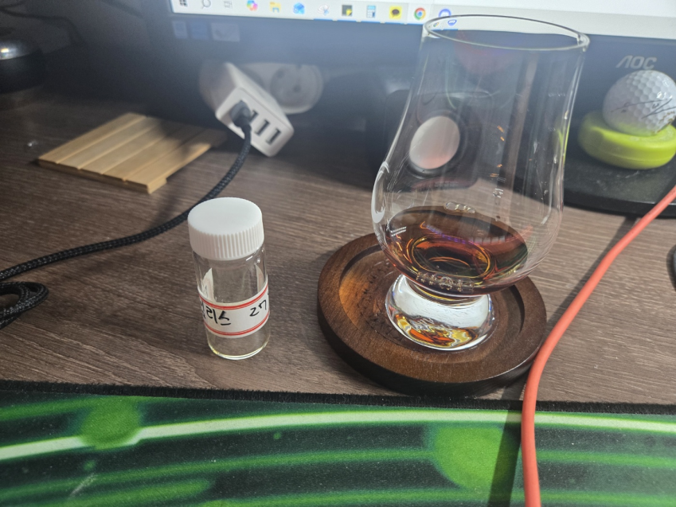

보모어 27y 타임리스시리즈 52.7%
n 재, 황, 건자두, 대추야자, 과숙사과, 오래된 가구, 꿀, 어두운계열의 꽃, 다크 초콜릿 파우더, 후추, 정향
약간의 재향의 시작으로 건자두와 대추야자 과숙사과류의 진득하고 달달한 향이 반겨주며 아주약한 황의 향이 살짝난다.
하지만 과한 향이 아니라 잘 어울려서 좀더 지루할듯한 향을 더욱 풍성하게 해준다.
그 뒤로 오래된 가구의 향과 어두운 계열의 화사하지 않은 말린 플로럴의 의 향이 나며 매우 오래된 꿀종류의 달달한 향이난다.
다크초콜릿 파우더의 과하게 달지 않은 점잖은 향과 후추와 정향류의 매운향이 마무리된다
시간이 자나면서 약간의 뉘양스가 변화되며
커피의 향과 체리, 건푸룬, 코코어파우더, 밝은류의 플로럴, 약간의 민티, 스모크 , 수목원 스로운 향으로 변한다.
p 잘익은 포도, 오렌지 칩, 망고 칩, 건 무화과, 약간의 짠맛, 화사한 플롤럴 , 건 자두, 커피, 다크 초콜릿, 우디, 약간의 스파이스, 재
잘익은 포도와 오렌지 칩, 망고 칩, 건무화 과류의 맛있고 진득한 단맛이 반겨주며 단 맛이 끝날때쯤 약간의 짠맛이 느껴진다.
그뒤로 화사한 꽃향과 건 자두류의 상큼하고 진득한맛이 다시 재미 있게 해주며
입에 오래 머금고 있을수록 커피와 다크 초콜릿의 맛으로 변한뒤 약간의 우디함과 약한 스파이스 마지막에 재의 맛이 올라온다.
f 건 자두, 밝은류의 꽃향, 다크 초콜릿, 후추, 커피, 타닌, 살짝 눌러 붙은 빵, 재
긴 여운
건 자두류의 새콤하며 달콤함 밝은류의 꽃향이 올라오며 다크초콜릿의 묵직하면서 끈적함 달달함이 목에 남고 후추의 매운맛
커피(에스프레소)의 쌉살한 뉘향스에 약간의 타닌감 으로 끝난뒤 살짝 눌러붙어서 타기전의 빵의 고소함이 남으며
은은하게 재의 여운을 길게 남깁니다.
* 총 평 *
오랜만에 마시는 타임리스 27y입니다.
너무 맛이 있어서 지인꺼 더 달라고 찡찡거리다가 등짝 맞엇던 기억이 있네요 ㅎㅎ
진짜 시간을 두고 마시면 변하고 입에 넣고 5분정도 머금게 만드는 맛있는 바틀입니다.
제가 뭐 이걸 많이 마셔보진 않았지만 이건 꼭 구입해야되는 가치가있는 바틀이라고 생각하네요
때가 되면 하나 사고 싶은 바틀입니다.
너무 맛있는 한잔이었습니다.